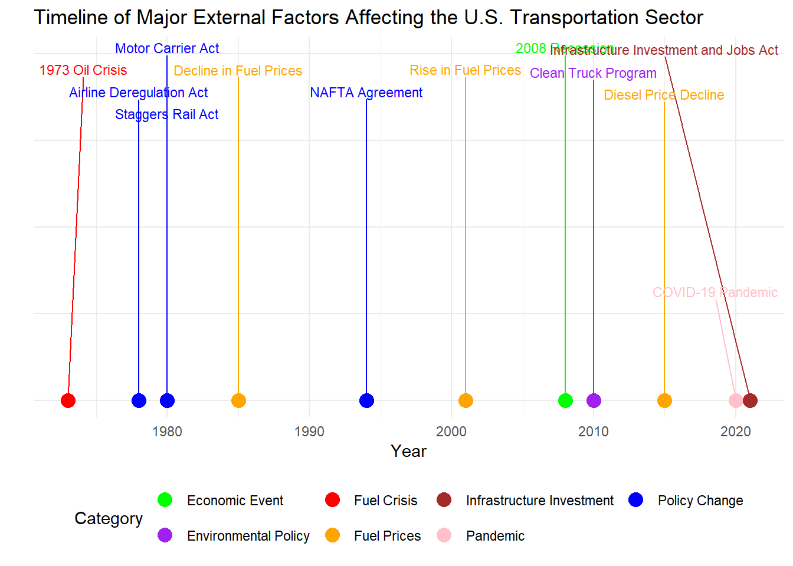

To-Do list for this week Develop a timeline outlining major external factors (fuel prices, policy changes) affecting the transportation sector and visualize it in R
[1] "...1"
[2] "TOTAL U.S. GDP"
[3] "For-hire transportation services GDP, total"
[4] "Air transportation...4"
[5] "Rail transportation...5"
[6] "Water transportation...6"
[7] "Truck transportation...7"
[8] "Transit and ground passenger transportation...8"
[9] "Pipeline transportation...9"
[10] "Other transportation and support activities...10"
[11] "Warehousing and storage...11"
[12] "Percent of U.S. GDP"
[13] "For-hire transportation services"
[14] "Air transportation...14"
[15] "Rail transportation...15"
[16] "Water transportation...16"
[17] "Truck transportation...17"
[18] "Transit and ground passenger transportation...18"
[19] "Pipeline transportation...19"
[20] "Other transportation and support activities...20"
[21] "Warehousing and storage...21"
[22] "Percent of for-hire transportation services GDP"
[23] "Air transportation...23"
[24] "Rail transportation...24"
[25] "Water transportation...25"
[26] "Truck transportation...26"
[27] "Transit and ground passenger transportation...27"
[28] "Pipeline transportation...28"
[29] "Other transportation and support activities...29"
[30] "Warehousing and storage...30"
Filter Data for Timeline Events Since I’m focused on creating a timeline of external factors like fuel prices and policy changes, I’ll need to isolate specific years and events to include in the timeline. I’ll add a subset of relevant data and then create a separate data frame for these events.
# Create a data frame with specific events for the timelineevents <-data.frame(year =c(2005, 2008, 2009, 2010, 2011, 2012, 2015, 2020, 2021, 2022),label =c("Fuel Prices Spike","Energy Policy Act","Global Financial Crisis","FMCSA Safety Regulations","Natural Gas Boom","MAP-21 Act","Low Oil Prices","COVID-19 Pandemic & CARES Act","Supply Chain Disruptions & Infrastructure Act","Fuel Price Surge" ),type =c("Fuel", "Policy", "Global", "Policy", "Fuel", "Policy", "Fuel", "Global", "Global/Policy", "Fuel"))
Plot the Timeline
# Plot the timeline with line width aestheticggplot(events, aes(x = year, y =1, color = type)) +geom_point(size =5) +# Points for each eventgeom_segment(aes(x = year, xend = year, y =1, yend =0.9), color ="gray", linewidth =0.5) +# Adjusted to use linewidthgeom_text(aes(label = label), angle =45, hjust =0, nudge_y =0.2, size =3.5) +# Event labelsscale_x_continuous(breaks =seq(2005, 2022, by =1)) +# Set x-axis breaks for each yearlabs(title ="Timeline of Major External Factors Affecting the U.S. Transportation Sector",x ="Year",y ="" ) +theme_minimal() +theme(axis.text.y =element_blank(), # Remove y-axis textaxis.ticks.y =element_blank(), # Remove y-axis tickslegend.position ="bottom" ) +guides(color =guide_legend(title ="Event Type")) # Legend for event types
Modify the Data for a Gantt-Style Chart
# Load necessary librarieslibrary(ggplot2)library(dplyr)# Define the data with start and end years for Gantt-style visualizationevents <-data.frame(event =c("Fuel Prices Spike", "Energy Policy Act", "Global Financial Crisis","FMCSA Safety Regulations", "Natural Gas Boom", "MAP-21 Act","Low Oil Prices", "COVID-19 Pandemic & CARES Act", "Supply Chain Disruptions & Infrastructure Act", "Fuel Price Surge" ),type =c("Fuel", "Policy", "Global", "Policy", "Fuel", "Policy", "Fuel", "Global", "Global/Policy", "Fuel"),start_year =c(2005, 2008, 2009, 2010, 2011, 2012, 2015, 2020, 2021, 2022),end_year =c(2008, 2008, 2009, 2010, 2014, 2012, 2018, 2020, 2022, 2022))
Create the Gantt-Style Timeline Chart
# Gantt-style timeline plotggplot(events, aes(x = start_year, xend = end_year, y = event, yend = event, color = type)) +geom_segment(linewidth =5) +# Use linewidth instead of size for line thicknessscale_x_continuous(breaks =seq(2005, 2022, by =1)) +# Set x-axis breaks for each yearlabs(title ="Gantt-Style Timeline of Major External Factors Affecting the U.S. Transportation Sector",x ="Year",y ="Event" ) +theme_minimal() +theme(axis.text.y =element_text(size =8), # Adjust y-axis text size for readabilitylegend.position ="bottom" ) +guides(color =guide_legend(title ="Event Type")) # Legend for event types
Key Points to Observe
Event Types: Each row represents a specific event, with different colors indicating the type of factor (e.g., fuel-related, policy-related, or global events). This visualization helps quickly identify the kinds of events that have significantly impacted the transportation sector over the years.
Event Duration: The length of each horizontal bar shows the duration of each event:
Short-Term Events (like specific policy implementations) have shorter bars, indicating a limited time impact.
Long-Term Events (like the shale gas boom or supply chain disruptions) have longer bars, indicating they affected the transportation sector over multiple years.
Overlapping Events: Look for events that occur around the same time. For example, if a fuel price surge coincides with a global event (like the COVID-19 pandemic), it may indicate a compounded effect on the transportation sector during that period. Overlapping policy changes and fuel-related events (such as the 2012 MAP-21 Act and low oil prices in 2015) could suggest a favorable environment for sector growth or cost reduction.
Major Disruptions: The COVID-19 pandemic in 2020 and the subsequent supply chain disruptions in 2021-2022 stand out, as they span multiple categories (global events, policy responses) and have broad implications across transportation modes.
Trends by Type: Fuel-Related Events: Periodic spikes and drops in fuel prices (2005-2008, 2015, 2022) indicate volatility that directly affects transportation costs.
Policy Events: Regulatory changes and infrastructure investments, like the FMCSA Safety Regulations (2010) and the Infrastructure Act (2021), tend to support long-term improvements but may come with short-term compliance costs.
Global Events: Economic downturns (2009 financial crisis) and the COVID-19 pandemic have had significant impacts, shown by bars for 2009 and 2020, signaling major demand shocks or disruptions.
Overall Insights: The Gantt-style timeline provides a broad overview of the external pressures and opportunities the transportation sector has faced. By analyzing the interaction between fuel volatility, policy changes, and global disruptions, you can better understand how these factors shape sector trends and resilience. This visual will make it easier to discuss how specific types of external factors impact transportation modes differently and the sector’s response to multi-year trends.
The following object is masked from 'package:ggplot2':
last_plot
The following object is masked from 'package:stats':
filter
The following object is masked from 'package:graphics':
layout
library(ggrepel)# Load the datasetdata <-read.csv("C:/Users/toluf/OneDrive/Desktop/Week_10/Cleaned_Dataset_USGDP.csv")# Inspect the first few rowshead(data)
# Check the structure of the data to understand its typesstr(data)
'data.frame': 31 obs. of 30 variables:
$ year : int 1980 1985 1990 1995 1996 1997 1998 1999 2000 2001 ...
$ total_u_s_gdp : num 2788 4218 5800 7415 7838 ...
$ for_hire_transportation_services_gdp_total : num 103 137 173 232 241 ...
$ air_transportation_4 : num 13.1 19.3 31.3 46.2 46.9 ...
$ rail_transportation_5 : num 20.2 21 18.6 21.1 20.9 ...
$ water_transportation_6 : num 3.5 4 5.1 6.3 6.6 ...
$ truck_transportation_7 : num 28.4 39.4 49.7 69.3 73.1 ...
$ transit_and_ground_passenger_transportation_8 : num 5.8 7.3 9 11.8 12.8 ...
$ pipeline_transportation_9 : num 5.1 7.3 6 6.7 7.1 ...
$ other_transportation_and_support_activities_10 : num 20.2 29.3 39.9 51.6 54.3 ...
$ warehousing_and_storage_11 : num 6.4 9.5 13 18.8 19.6 ...
$ percent_of_u_s_gdp : logi NA NA NA NA NA NA ...
$ for_hire_transportation_services : num 3.68 3.25 2.98 3.12 3.08 ...
$ air_transportation_14 : num 0.47 0.458 0.54 0.623 0.598 ...
$ rail_transportation_15 : num 0.725 0.498 0.321 0.285 0.267 ...
$ water_transportation_16 : num 0.1255 0.0948 0.0879 0.085 0.0842 ...
$ truck_transportation_17 : num 1.019 0.934 0.857 0.935 0.933 ...
$ transit_and_ground_passenger_transportation_18 : num 0.208 0.173 0.155 0.159 0.163 ...
$ pipeline_transportation_19 : num 0.1829 0.1731 0.1034 0.0904 0.0906 ...
$ other_transportation_and_support_activities_20 : num 0.725 0.695 0.688 0.696 0.693 ...
$ warehousing_and_storage_21 : num 0.23 0.225 0.224 0.254 0.25 ...
$ percent_of_for_hire_transportation_services_gdp: logi NA NA NA NA NA NA ...
$ air_transportation_23 : num 12.8 14.1 18.1 19.9 19.4 ...
$ rail_transportation_24 : num 19.69 15.32 10.76 9.11 8.66 ...
$ water_transportation_25 : num 3.41 2.92 2.95 2.72 2.74 ...
$ truck_transportation_26 : num 27.7 28.7 28.8 29.9 30.3 ...
$ transit_and_ground_passenger_transportation_27 : num 5.65 5.32 5.21 5.09 5.3 ...
$ pipeline_transportation_28 : num 4.97 5.32 3.47 2.89 2.94 ...
$ other_transportation_and_support_activities_29 : num 19.7 21.4 23.1 22.3 22.5 ...
$ warehousing_and_storage_30 : num 6.24 6.93 7.52 8.11 8.12 ...
9.2.0.3 Step 2 Create the Timeline of Major External Events
9.2.0.3.1 2.1Prepare Data for the Timeline
First, i’ll create a separate data frame for significant events, listing the year, event name, description, and category
# Create a timeline data frame with key eventstimeline_data <-data.frame(Year =c(1973, 1978, 1980, 1980, 1985, 1994, 2001, 2008, 2010, 2015, 2020, 2021),Event =c("1973 Oil Crisis", "Airline Deregulation Act", "Motor Carrier Act", "Staggers Rail Act","Decline in Fuel Prices", "NAFTA Agreement", "Rise in Fuel Prices", "2008 Recession", "Clean Truck Program", "Diesel Price Decline", "COVID-19 Pandemic", "Infrastructure Investment and Jobs Act"),Description =c("OPEC oil embargo led to sharp increase in fuel prices.","Deregulated the airline industry, leading to increased competition.","Deregulated trucking industry, allowing for increased competition.","Deregulated rail industry, allowing rail companies to set competitive rates.","Fuel prices began to decline, reducing operational costs.","Increased cross-border trucking and rail traffic between U.S., Canada, and Mexico.","Steady increase in fuel prices during this period, peaking in 2008.","Global economic downturn reduced demand across the transportation sector.","Stricter environmental standards for trucks, encouraging cleaner technologies.","Diesel prices fell due to increased U.S. oil production.","Pandemic disrupted global supply chains and shifted demand.","Allocated significant funding for transportation infrastructure improvements." ),Category =c("Fuel Crisis", "Policy Change", "Policy Change", "Policy Change", "Fuel Prices", "Policy Change", "Fuel Prices", "Economic Event", "Environmental Policy", "Fuel Prices", "Pandemic", "Infrastructure Investment"))# Print to verify the structureprint(timeline_data)
Year Event
1 1973 1973 Oil Crisis
2 1978 Airline Deregulation Act
3 1980 Motor Carrier Act
4 1980 Staggers Rail Act
5 1985 Decline in Fuel Prices
6 1994 NAFTA Agreement
7 2001 Rise in Fuel Prices
8 2008 2008 Recession
9 2010 Clean Truck Program
10 2015 Diesel Price Decline
11 2020 COVID-19 Pandemic
12 2021 Infrastructure Investment and Jobs Act
Description
1 OPEC oil embargo led to sharp increase in fuel prices.
2 Deregulated the airline industry, leading to increased competition.
3 Deregulated trucking industry, allowing for increased competition.
4 Deregulated rail industry, allowing rail companies to set competitive rates.
5 Fuel prices began to decline, reducing operational costs.
6 Increased cross-border trucking and rail traffic between U.S., Canada, and Mexico.
7 Steady increase in fuel prices during this period, peaking in 2008.
8 Global economic downturn reduced demand across the transportation sector.
9 Stricter environmental standards for trucks, encouraging cleaner technologies.
10 Diesel prices fell due to increased U.S. oil production.
11 Pandemic disrupted global supply chains and shifted demand.
12 Allocated significant funding for transportation infrastructure improvements.
Category
1 Fuel Crisis
2 Policy Change
3 Policy Change
4 Policy Change
5 Fuel Prices
6 Policy Change
7 Fuel Prices
8 Economic Event
9 Environmental Policy
10 Fuel Prices
11 Pandemic
12 Infrastructure Investment
9.2.0.4 2.2 Create the Timeline Plot
Using ggplot2 with ggrepel for annotations, creating a timeline visualization that categorizes events by color.
# Define colors for categoriescategory_colors <-c("Fuel Crisis"="red", "Policy Change"="blue", "Fuel Prices"="orange","Economic Event"="green", "Environmental Policy"="purple", "Pandemic"="pink", "Infrastructure Investment"="brown")# Create the timeline plotggplot(timeline_data, aes(x = Year, y =0, color = Category)) +geom_point(size =4) +geom_text_repel(aes(label = Event), size =3, direction ="y", nudge_y =0.2) +scale_color_manual(values = category_colors) +labs(title ="Timeline of Major External Factors Affecting the U.S. Transportation Sector",x ="Year", y ="" ) +theme_minimal() +theme(axis.text.y =element_blank(), axis.ticks.y =element_blank(),panel.grid.minor.y =element_blank(), legend.position ="bottom" )

9.2.0.5 Step 3: Total GDP vs. Transportation GDP Over Time
To observe how the transportation sector has grown in relation to the total GDP, we’ll plot these two GDP metrics as line graphs over time.
# Define colors for the GDP linesgdp_colors <-c("Total U.S. GDP"="blue", "For-Hire Transportation Services GDP"="red")# Plot Total U.S. GDP and Transportation GDP over timeggplot(data, aes(x = year)) +geom_line(aes(y = total_u_s_gdp, color ="Total U.S. GDP")) +geom_line(aes(y = for_hire_transportation_services_gdp_total, color ="For-Hire Transportation Services GDP")) +labs(title ="Total U.S. GDP vs For-Hire Transportation Services GDP Over Time",x ="Year", y ="GDP (in billions of current dollars)" ) +scale_color_manual("", values = gdp_colors) +theme_minimal()
9.2.0.6 Step 4: Sector-Specific GDP Trends
To examine each transportation sector (trucking, air, rail, water), we’ll plot them separately to observe unique trends over time.
# Reshape data for sector-specific plottingsector_gdp_data <- data %>%select(year, air_transportation_4, rail_transportation_5, water_transportation_6, truck_transportation_7) %>%pivot_longer(cols =-year, names_to ="sector", values_to ="gdp")# Plot sector-specific GDP trendsggplot(sector_gdp_data, aes(x = year, y = gdp, color = sector)) +geom_line() +labs(title ="Sector-Specific GDP Trends in For-Hire Transportation Services",x ="Year", y ="GDP (in billions of current dollars)" ) +scale_color_discrete(name ="Sector", labels =c("Air", "Rail", "Water", "Truck")) +theme_minimal()
9.2.0.7 Step 5: Sector Contribution as a Percentage of Total Transportation GDP
To understand the shifting dominance of each sector within the transportation GDP, we’ll create a stacked area chart showing each sector’s contribution as a percentage over time.
9.2.0.8 5.1 Prepare Data for Percentage Contribution Plot
We’ll reshape the data to focus on each sector’s percentage contribution to total For-Hire Transportation GDP.
# Select and reshape data for percentage contribution by sectorsector_percentage_data <- data %>%select( year, air_transportation_23, rail_transportation_24, water_transportation_25, truck_transportation_26, transit_and_ground_passenger_transportation_27, pipeline_transportation_28, other_transportation_and_support_activities_29, warehousing_and_storage_30 ) %>%pivot_longer(cols =-year, names_to ="sector", values_to ="percentage")
9.2.0.9 5.2 Plot the Percentage Contribution Over Time
This stacked area chart will help illustrate how each sector’s contribution to GDP has changed, showing trends like trucking’s increasing role due to deregulation and e-commerce growth
# Plot percentage contribution of each sector over timeggplot(sector_percentage_data, aes(x = year, y = percentage, fill = sector)) +geom_area() +labs(title ="Percentage Contribution of Each Sector in For-Hire Transportation Services GDP",x ="Year", y ="Percentage of Total For-Hire Transportation GDP" ) +theme_minimal() +scale_fill_discrete(name ="Sector")
This plot showS how sectors like trucking and air transport grew in their GDP contributions over time. We can explain trends here, such as the effect of deregulation on trucking and how e-commerce drove an increase in demand for both trucking and warehousing.```
9.2.0.10 Step 6: Interactive Timeline with GDP and Major Events
This visualization combines GDP data with significant events, allowing for an interactive examination of how external factors align with GDP trend
9.2.0.11 6.1 Prepare the Interactive Plotly Timeline Data
library(plotly)# Create interactive timeline with plotlytimeline_plot <-plot_ly(data = timeline_data,x =~Year,y =~0, # Keep all events on the same y-axis level for a horizontal timelinetype ="scatter",mode ="markers+text",text =~paste0("Event: ", Event, "<br>Description: ", Description, "<br>Category: ", Category),hoverinfo ="text",marker =list(size =10),color =~Category,colors = category_colors) %>%layout(title ="Interactive Timeline of Major External Factors Affecting the U.S. Transportation Sector",xaxis =list(title ="Year", tickmode ="linear"),yaxis =list(title ="", showticklabels =FALSE),hoverlabel =list(bgcolor ="white", font =list(size =12)),showlegend =TRUE )# Display the plottimeline_plot
Explanation: This timeline allows users to interactively explore the events and see their descriptions and categories. Key events such as the 2008 Recession or COVID-19 Pandemic are marked to show their effects on the transportation GDP, with implications such as temporary drops in freight and changes in sectoral growth patterns``
9.2.0.12 Step 7: Drafting the Impact Analysis
Timeline of Major External Events:
Impact of Policies: Deregulation policies like the Motor Carrier Act (1980) and Staggers Rail Act (1980) reduced costs and increased competition, leading to a growth boost in trucking and rail sectors.
Technological Advances: The rise of e-commerce in the 2000s, coupled with advances in logistics, significantly increased trucking’s share of GDP, as it became essential for last-mile delivery.
Economic Crises: The 2008 Recession and COVID-19 Pandemic caused temporary drops in GDP, affecting the transportation sector due to reduced demand.
Total GDP vs. Transportation GDP:
Overall Trend: Total GDP has grown at a faster rate than transportation GDP, especially in the 2000s, with technology, finance, and healthcare leading economic growth.
Policy Correlation: Transportation GDP saw significant upticks after deregulation in the 1980s and as trade agreements like NAFTA (1994) increased demand for trucking and rail transport.
Explanation of Fluctuations: Highlight inflection points, like the 2008 recession, to show how economic events affect transportation differently than other sectors.
Sector-Specific Trends:
Trucking: Deregulation and the rise of e-commerce in the 2000s significantly benefited trucking. Continued infrastructure investments have also strengthened trucking as the primary mode of goods distribution.
Air Transport: Growth in global trade and support for air cargo infrastructure made air transportation crucial for high-value and time-sensitive goods.
Rail and Water: Despite deregulation, rail and water transport have seen slower growth due to competition from trucking and air, particularly for shorter regional hauls.
4.Sector Contribution as a Percentage:
Trucking’s Dominance: Over the years, trucking’s share of transportation GDP has increased, supported by infrastructure investments and the logistics demands of e-commerce.
Steady Contributions of Other Sectors: Sectors like rail and water transport remain stable due to specialized uses and regulatory constraints, while air transport has grown in response to global trade demands.
Future Implications:
Policy: Current infrastructure investments (e.g., Infrastructure Investment and Jobs Act) will likely enhance trucking, rail, and water transport efficiencies.
Technology: Advances in automation and electric vehicles will shape the future of transportation GDP, especially as environmental policies favor cleaner modes.